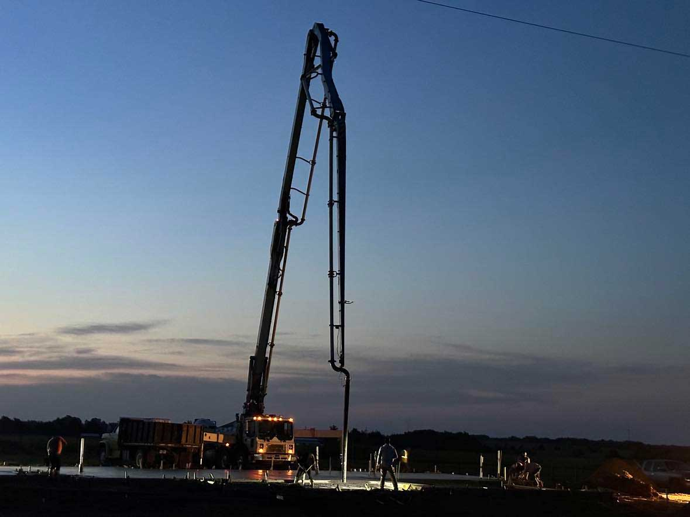

WHAT WE DO
Concrete pumping
that keeps work moving.
THE SERVICE
Reach the pour.
Skip the detour.
A mixer truck cannot always park next to the spot where concrete belongs. A boom pump bridges that gap, moving concrete across the site and placing it where the crew needs it.
New Star brings a 42 meter boom pump to jobs in Farmersville and surrounding communities. Whether access is tight, the placement is elevated, or the pour is a long way from the truck, we can talk through the site and equipment needs with you.
WHY USE A BOOM PUMP
Made for hard-to-reach work.
Work past obstacles
Carry concrete over or around site features that keep a mixer truck from getting close.
Keep pours moving
Move concrete directly to the placement area instead of hauling it across the job by hand.
Focus on placement
Give your crew more time to guide, level, and finish the concrete where it goes.

LOCAL. OWNER-OPERATED.
A direct line to the person on the pump.
New Star is a family-owned operation based in Farmersville. We value showing up prepared, communicating clearly, and doing the work right.
Discuss your pourREADY TO PLAN A POUR?
Let's talk through the job.
Share your location, timing, and what you need to place.